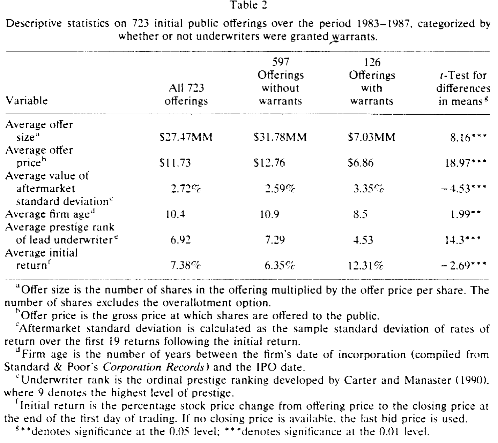
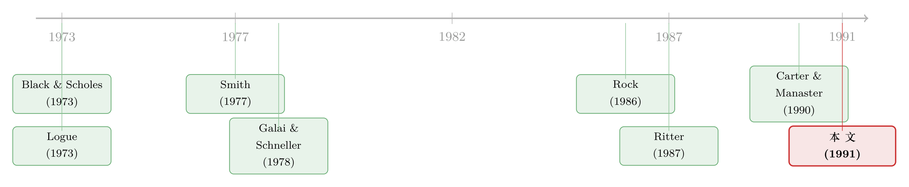

投行的「隐形薪水」：藏在认股权证里的那笔超额报酬
本文读的是 Barry, Muscarella & Vetsuypens (1991, Journal of Financial Economics)：在 1983–1987 年的 723 宗火力承诺 (firm commitment) IPO 中，有 17% 的发行额外给了主承销商一份认股权证 (warrant)；这份权证的价值高达承销价差的 45%–80%，让上市成本显著抬升。作者的核心论断是——它本质上是一条「绕过监管」的暗道：当 NASD 的「合理报酬」规则卡住了现金佣金，投行就改用一份被监管系统性低估的权证，把超额报酬悄悄拿走。
1 一桩看上去「白送」的买卖
先讲一个故事。
1986 年 9 月 5 日，QVC Network 上市，承销商 Furman Selz 以每股 $10.00 卖出 250 万股，拿走的承销价差是 200 万美元——占发行总额的 8%，干净利落，看上去就是一笔标准的承销费。
但合同里还藏着另一行字：Furman Selz 只花了 名义上的 $100，就买到了一份五年期的认股权证，可以按每股 $12.00 的价格，认购 25 万股 QVC 股票。
接下来发生的事，让这 $100 显得像个玩笑。QVC 上市首日，股价冲到了 $20.50。那份权证的理论行权价值瞬间变成每股 $8.50，合计 $2,125,000——比 Furman Selz 那笔 200 万的承销费还要多。
于是一个很自然的问题冒出来了：如果这份权证这么值钱，发行人为什么要送？换句话说，这到底是承销费之外的一笔「白送」，还是上市成本里一块被刻意藏起来的账？
这正是本文要回答的问题。QVC 当然是个极端个案，但作者想说的是：管理承销商手里的这份权证，绝不是可有可无的「甜头」，而是一项不容忽视的发行成本。早在 Smith (1977) 研究增发 (seasoned equity offering) 时就发现，承销商权证可能是发行人一笔可观的成本；Ritter (1987) 在系统研究上市成本时也注意到，权证被频繁使用，尤其是在尽力承销 (best efforts) 的发行里。但在这之前，没有人把它放在一个大样本里，用现代期权定价的尺子认认真真地称过一遍重量。
2 先把这份「薪水」称出重量
要回答「权证值不值钱」，第一步得先会给它定价。
权证 (warrant) 很像股票的看涨期权 (call option)，但有一个关键区别：它是由公司自己发行的。一旦行权，公司要按低于市价的价格交付新股，老股东手里的权益会被 稀释 (dilution)。所以不能直接套用普通的期权公式。
这就是为什么定价权证不能简单地用 Black-Scholes：行权那一刻，「饼」本身被做小了，而你恰恰是分到稀释后那块饼的人。
作者采用的，是 Black 与 Scholes (1973) 提出、再由 Galai 与 Schneller (1978) 落地的处理思路：把任意一个看涨期权公式，通过两步调整——(1) 行权带来的稀释效应、(2) 权证价值本身对公司股权价值的反作用——转换成权证定价公式。他们把这套方法分别套在 Black-Scholes 模型和 Cox 的常弹性方差 (constant elasticity of variance, CEV) 模型上。
定价还缺一个最关键的输入：波动率 (volatility)。可上市前股票根本没有公开交易，怎么估？作者的做法是，取该公司 IPO 之前、CRSP NASDAQ 样本里所有股票在发行前 126 个交易日的平均标准差作为代理。
这里有一个诚实的让步，值得记下来：
由于新股「随时间成熟」后风险会下降 [Ibbotson (1975)、Clarkson & Thompson (1990)]，用「已成熟的存量股票」去估「新股」的波动率，会系统性地 偏低。而权证价值是波动率的增函数——所以作者承认，他们算出来的权证价值，是一个 被低估的下界。换句话说，真实的成本只会比论文报告的更高。
3 真正关键的一步：监管者用的，是另一把尺子
把权证称完重量，故事才刚刚开始。
为什么发行人甘愿付出这么贵的一份权证？作者的第一个、也是全文的核心假说是：它是一条绕过监管的暗道。
要理解这条暗道，得先看监管者手里那把尺子。自 1960 年代起，美国证券交易商协会 (National Association of Securities Dealers, NASD) 就在审查承销报酬是否「合理」。发行规模越小、风险越高，允许的报酬比例越高；规模越大，比例越低。听上去很合理。
但问题出在：当报酬里包含权证时，NASD 用一个出奇简单的公式去给它估值。这是全文的「题眼」：
这里 P_o 是 IPO 的发行价，E 是权证行权价，c 是承销商取得权证的成本。
请注意这个公式 没有 什么：它完全忽略了权证的到期时间、稀释程度、发行的波动率、以及利率水平——而这四个变量，恰恰是任何一个被现代金融学认可的权证估值模型里不可或缺的。
接着，一个简单的算术把暗道彻底点亮了。样本里 87% 的权证，行权价恰好等于发行价的 120%（E = 1.20 P_o）。代进上面的公式：
$$ W_{NASD} = \frac{1.65\,P_o - 1.20\,P_o}{2} = \frac{0.45\,P_o}{2} = 0.225\,P_o $$
也就是说，NASD 一律把这些权证估值为发行价的 22.5%（蓝天法 (blue-sky laws) 下各州的估值更低，约 20%）。它不看风险——而我们刚刚说过，这些发行恰恰是风险最高的那一批。
于是反转出现了：监管者用一把「不看风险」的尺子，去量一份「价值主要来自风险」的资产，必然系统性地量小。 一笔在期权定价模型下早已突破「合理报酬」上限的承销报酬，只要换成权证、再用 NASD 公式一算，就堂而皇之地落回了合规区间。投行因此得以用权证替换掉本该是现金、却会触线的那部分佣金。
这就是作者的核心贡献：承销商权证不是什么神秘的金融创新，而是一个 让承销服务市场在监管约束下仍能运转的机制。当竞争要求给高风险发行支付高报酬、而规则又不许时，权证补上了那道被监管堵死的缝。
（关于承销定价里「投行替你卖了一份期权」的另一种视角，可参见《新股「打折」不是吃亏，是投行替你卖了一份看跌期权》；而权证作为 IPO 里一种分期融资工具的角色，又见《一次只给一半：新股里的认股权证，是「甜头」还是镣铐？》。）
4 数据：谁在用权证？
作者的初始样本，是 1983 年 1 月到 1987 年 5 月间，在道琼斯新闻线或《华尔街日报》上公开宣布的全部工业公司火力承诺型 IPO（剔除封闭式基金、储贷机构转制、以及「股票+权证」打包出售的「单位 (unit)」发行）。最终能确认权证使用情况的样本是 723 宗 IPO，其中 126 宗（约 18%）给了承销商权证。
先看权证本身长什么样（Table 1）：平均每份权证可认购 76,984 股，约占发行规模的 8%；平均期限 59 个月，其中 113 份（89%）是五年期；行权价/发行价的比值均值为 1.205，而 110 份（87%）恰好等于 1.20——这正是州蓝天法的硬性下限。换句话说，绝大多数权证都精确地「贴着监管红线」设计，这本身就是暗道存在的旁证。
再看「用权证的」和「不用权证的」两类发行有什么不同（如表 2 所示）：

Table 2
差异大得惊人，而且方向高度一致：
- 规模：用权证的发行平均规模只有
$7.03MM，不用的高达$31.78MM（t = 8.16）。 - 风险：用权证的发行上市后回报标准差是
3.35%，显著高于不用权证的发行（t = −7.53）。 - 公司年龄：用权证的公司更年轻，平均成立
8.5年，对比10.9年（t = 1.99）。 - 承销商声誉：用 Carter-Manaster (1990) 的 0–9 声誉排名，用权证发行的主承销商平均只有
4.53，远低于不用权证发行的7.29（t = 11.3）。 - 首日回报：用权证的发行平均首日回报
12.31%，几乎是不用权证发行6.35%的两倍（t = −2.69）。
一句话：权证集中出现在那些规模小、风险高、公司年轻、由低声誉投行承销、上市后被严重低价发行的 IPO 里。 这些恰恰是最难卖、最需要密集尽调和推销、因而承销商最有理由索取高报酬的发行——也正是 NASD 的报酬上限最容易绑住手脚的地方。
5 还有第二条线索：信息不对称
绕过监管，大概不是权证的唯一解释——毕竟在监管限制出现之前，权证就已经在用了 [SEC (1963)]。
于是作者抛出第二个假说：权证还能 缓解信息不对称 (asymmetric information)。Rock (1986) 指出，管理层比公众更了解公司价值，潜在投资者因此担心买到高估的股票。而权证的妙处在于：它的价值随股价表现上升、随发行被低价（underpricing）而增值。承销商一旦接受权证作为报酬，就有了动力去「游说」一个更低的发行价，从而 降低了发行被高估的概率。这是一种把投行利益和买方利益绑在一起的「契约债券 (bonding)」。
Logue (1973) 早就讲过这个直觉：如果权证行权价挂钩发行价，承销商的利润就随上市后股价越涨越高——而保证股价上涨的一个办法，就是把发行价定得偏低一点。
这一假说同样得到了数据支持：权证恰恰用在那些信息不对称预计最严重的高风险发行里——这与「绕过监管」的证据指向同一批发行，二者并不互斥。
6 文献脉络
把这条线索捋一捋，会看到三股力量在这篇 1991 年的论文里交汇。
第一股是期权定价的工具。 Black 与 Scholes (1973) 奠定了期权定价的基石，并提示了处理稀释的思路；Galai 与 Schneller (1978) 把它落地成可用的权证公式。没有这套工具，作者就无法把「监管低估了多少」量化出来。
第二股是 IPO 成本与低价发行的实证传统。 Ibbotson (1975) 记录了新股的首日正回报；Logue (1973) 与 Smith (1977) 最早点出承销商权证与低价发行、与发行成本之间的关系；Ritter (1987) 系统地丈量了上市成本。
第三股是信息经济学。 Rock (1986) 用赢家诅咒解释了 IPO 为何被低价发行；Carter 与 Manaster (1990) 给出了承销商声誉的可操作度量——这把尺子被本文直接拿来证明「权证发行由低声誉投行主导」。
本文站在这三股力量的交汇处，做了一件别人没做的事：用期权定价的尺子，去量监管那把尺子的偏差，从而把「承销商权证」从一个被忽略的脚注，变成了理解承销报酬与监管套利的一个窗口。

7 评论与延伸（Q&A + 研究方向）
(a) 几个可能的疑问
Q：权证价值是「承销价差的 45%–80%」，这个区间为什么这么宽？
因为它取决于用哪个估值公式。作者分别用了 Black-Scholes 和 CEV（都经 Galai-Schneller 稀释调整），两个模型对同一份权证给出的价值不同，于是得到一个区间。而且别忘了，由于波动率被系统性低估，这个区间整体还是个下界。
Q：把权证算进去之后，「绕过监管」是不是只是会计意义上的，实际并没多花钱？
不是。作者的论点恰恰相反：权证是真金白银的成本（QVC 那 $2.1MM 就是活例子），只是它在 NASD 的账本里被记成了 22.5% 的发行价。所以监管判定的「合理」是建立在一个系统性偏低的估值之上的——真实的总上市成本因此被低估，而承销商拿到的真实报酬被低估。
Q：会不会是因果反了——不是「为了绕监管才用权证」，而是「高风险发行本来就既要权证又难定价」？
这是最实在的担忧。作者的证据是相关性的：权证集中在小、险、年轻、低声誉承销的发行里。这与「绕监管」一致，但也与「高风险发行需要更强的激励契约」（信息不对称假说）一致，二者无法用现有数据干净地分开——作者自己也承认两条线索并存。
Q：为什么权证只给主承销商，不给辛迪加 (syndicate) 的其他成员？
因为权证补偿的是主承销商「作为管理者」的特定角色——组建辛迪加、做尽职调查、承担被起诉的法律风险、上市后做市等等——而不是承担承销风险。证据之一：尽力承销里投行只是代销、不担风险，却照样常用权证。
Q：用「已上市存量股票」估新股波动率，偏差有多致命？
方向是确定的：偏低。新股随成熟而风险下降，所以拿成熟股票估新股必然低估波动率，进而低估权证价值。这意味着论文低估了成本——对作者的结论而言是「保守」的，反而加强了论证。
Q：这篇文章对今天还有意义吗，毕竟监管早变了？
它的具体制度细节（NASD 公式、1.65 系数）已是历史，但核心洞见长青：当监管用一把「不看风险」的简单尺子去管制一种「价值来自风险」的报酬形式时，必然制造出可被套利的缝隙。 这个逻辑在今天的各类报酬、费率与披露监管里反复重演。
(b) 几个可能的研究问题与提案
1. 把这把尺子移到公司债承销上。 【经济故事】公司债（尤其是高收益债）承销里，承销商有时也会拿到认股权证或股权 kicker，尤其在困境发行或私募中。是否同样存在「用权证替现金佣金、绕过披露或定价基准」的现象？ 【可行性】中。需要逐笔翻招股书/募集说明书识别权证条款，工作量大；识别可借鉴本文的「期权定价 vs. 名义估值」对照框架。债券波动率可由发行人股票或可比债券估计。
2. 外资承销商 vs. 本土承销商的权证使用差异。 【经济故事】不同司法辖区对承销报酬的监管松紧不同。当一家公司选择在监管更宽松的市场、或由跨境承销团承销时，权证的使用强度是否随监管约束的松紧而变化？这能为「绕监管」假说提供一个更干净的识别。 【可行性】中。需要跨国 IPO 数据与各国承销报酬规则的整理；识别策略可用监管改革或跨境上市作为外生变化的来源。
3. 权证发行后的「做市与流动性」承诺是否真的兑现。 【经济故事】作者发现主承销商几乎总会成为上市后的做市商。那么拿了权证的承销商，是否在上市后提供了更深的流动性、更窄的价差？权证是否真的「买」到了更好的售后市场支持？ 【可行性】高。识别策略：比较有/无权证发行在上市后一段时间的买卖价差、做市深度与价格支撑，控制规模与风险。所需数据为日内报价与做市商身份，公开可得。
4. 权证的「债券化」激励是否降低了被低价发行的程度。 【经济故事】信息不对称假说预言：拿权证的承销商会游说更低的发行价、从而股价更可能上涨。但本文里用权证的发行首日回报反而更高（12.31%）。这究竟是「权证激励奏效」还是「高风险发行本就更被低价」？ 【可行性】高。可在控制风险（波动率、声誉、规模）后，估计权证「相对价值」对首日回报与长期回报的边际影响，区分激励效应与风险补偿。数据即本文样本的现代扩展版。
我的判断
这篇论文的贡献，在于它把一个被实务界熟视无睹、被学术界轻轻带过的现象，第一次放在大样本里用期权定价严肃地称了重，并由此揭示出一条清晰的制度逻辑：监管的「简单尺子」与市场的「真实价值」之间的裂缝，会被理性的当事人精确地利用。1.20 倍行权价那 87% 的「扎堆」，是我读到的最有说服力的一个细节——它几乎是把「贴着红线设计」四个字刻在了数据里。
对识别的担忧也很坦诚：全文证据本质是 横截面相关性，「绕监管」与「缓解信息不对称」两条解释指向同一批发行，作者无法把它们干净地分开；而权证价值又依赖一个被自己承认偏低的波动率估计。这些都让「权证使总成本上升」这一结论在量级上仍有弹性（45%–80% 的宽区间正是这种不确定性的体现）。
如果让我接着往下看，我最想要的是一个 外生的监管冲击——某次对承销报酬规则或权证估值方法的改动——用它来把「绕监管」假说从相关性推向因果。退一步，哪怕只是验证「拿了权证的承销商，是否在上市后真的提供了更好的做市与价格支撑」，也能让「权证到底买到了什么」这个问题，从动机层面落到行为层面。
参考文献
Barry, C. B., Muscarella, C. J., & Vetsuypens, M. R. (1991). Underwriter warrants, underwriter compensation, and the costs of going public. Journal of Financial Economics 29(1), 113–135.
Black, F., & Scholes, M. (1973). The pricing of options and corporate liabilities. Journal of Political Economy 81(3), 637–659.
Carter, R., & Manaster, S. (1990). Initial public offerings and underwriter reputation. Journal of Finance 45(4), 1045–1068.
Clarkson, P., & Thompson, R. (1990). Empirical estimates of beta when investors face estimation risk. Journal of Finance 45(2), 431–453.
Galai, D., & Schneller, M. I. (1978). Pricing warrants and the value of the firm. Journal of Finance 33(5), 1333–1342.
Ibbotson, R. E. (1975). Price performance of common stock new issues. Journal of Financial Economics 2(3), 235–272.
Logue, D. E. (1973). On the pricing of unseasoned equity issues: 1965–1969. Journal of Financial and Quantitative Analysis 8(1), 91–103.
Ritter, J. R. (1987). The costs of going public. Journal of Financial Economics 19(2), 269–281.
Rock, K. (1986). Why new issues are underpriced. Journal of Financial Economics 15(1–2), 187–212.
Smith, C. W. (1977). Alternative methods for raising capital: Rights versus underwritten offerings. Journal of Financial Economics 5(3), 273–307.
U.S. Securities and Exchange Commission (1963). Report of a special study of securities markets. U.S. Government Printing Office.